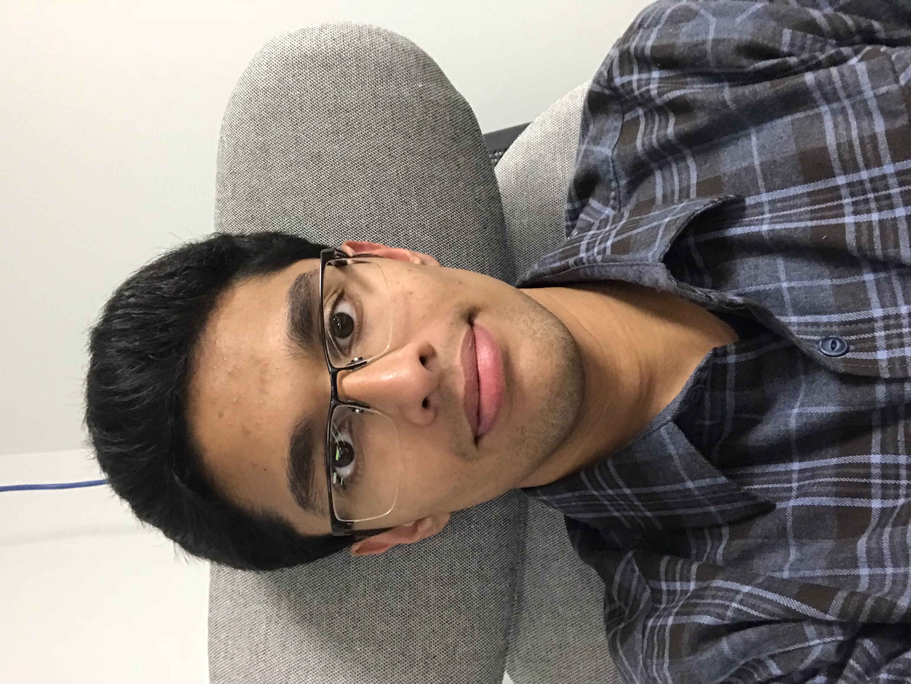

About Me
Hello and Welcome to my website. I am a 18 year old CS major at UNC-Chapel Hill. My interests include: running, biking, teaching, and programming. I have been at UNC for about a semester an I'm thoroughly enjoying it. In this website you can find information about me, Including what I'm working on at the moment.
Programming Knowledge
My current programming skills include:
- Java
- Python
- HTML
- C++
My dedication to programming drives me to learn new languages. I am currently working on learning Tableau and R.
My strongest asset, currently, is my Knowledge of OOP. I have been studying Java for more than five years and I've gained a thorough understanding of the concepts of Abstraction, Polymorphism, Encapsulation, and inheritance.